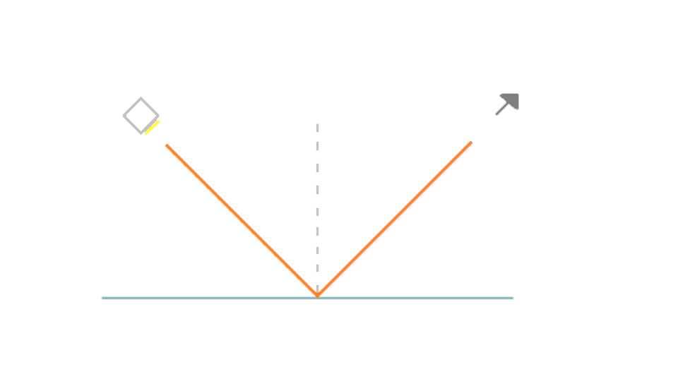

Oppimateriaali
Valo on näkemisen edellytys. Ihmissilmä kykenee havaitsemaan vain valonlähteet ja esineet, jotka lähettävät tai heijastavat valoa. Näkyvän valon aallopituus vaihtelee välillä 400-700 nm. Eri aallonpituudet näkyvät valossa eri väreinä. Esimerkiksi sinisen valon aallonpituus on noin 400 nm kun taas punaisen valon on noin 700 nm (rajat eivät ole tarkkoja).
Valkoinen valo (esim. auringon valo) koostuu erivärisistä valoista eli eri aallonpituuksista. Kun valkoinen valo kohtaa prisman oikeassa kulmassa, valo jakautuu eri väreiksi, spektriksi. Koska valon taittuminen riippuu valon väristä ja väri aallonpituudesta, valkoinen väri taittuu kaikkii aallonpituuksiin.
Valoon liittyviä ilmiöitä kuvatessa valoa voidaan mallintaa suoraviivaisesti etenevillä valonsäteillä. Tällä selitetään valon kulku mm. peileissä, linsseissä, kameroissa. Niiden kulkusuunta voi muuttua valonsäteen kohdatessa aineiden rajapintoja. Muutoksen suuruuteen vaikuttavat aineiden taitekertoimet. Valoa voidaan selittää myös aaltona ja hiukkasina.
Kun valo osuu esineeseen, valo voi joko heijastua siitä (osittain tai kokonaan), imeytyä siihen tai mennä sen läpi (osittin tai kokonaan). Monissa tilanteissa kaikki kolme ilmiötä tapahtuvat samanaikaisesti. Vaalea esine heijastaa valoa hyvin. Yleensä esine heijastaa vain osan sen pintaan osuvasta valosta ja loppu imeytyy esineeseen. Sitä vastoin, jos esine ei heijasta valoa lainkaan, se on täysin musta. Läpinäkyvän esineen kohdalla suurin osa valosta läpäisee esineen ja loput heijastuvat sen pinnasta. Tälläisiä esineita ovat esimerkiksi ikkunanlasi. Jos lasi ei heijastaisi ollenkaan valoa, olisi sitä mahdotonta nähdä.
Valoa mitataan suureella valaistusvoimakkuus ja yksiköllä luksi (tunnus lx). Valaistusvoimakkuus kertoo miten hyvin mittauskohta on valaistu. Esimerkiksi aurinkoisena kesäpäivänä valaistusvoimakkuus on noin 180 000 lx kun taas täysikuun valossa se on vain noin 0,2 lx.
Heijastuessa tasaisesta pinnasta, sen heijastuskulma (kuvan oikeanpuoleinen säde) on yhtä suuri kuin valonsäteen tulokulma (kuvan vasemmanpuoleinen säde) pinnan normaalin (kuvan katkoviiva) suhteen.
Valonlähde = kappale, joka lähettää valoa.
Valaistusvoimakkuus = valaistuksen voimakkuutta kuvaava suure. Kertoo miten hyvin mittauskohta on valaistu. Yksikkö luksi ja tunnus lx.
Varjo = Valoton alue, joka muodostuu sinne mihin valo ei pääse eli esim. esineiden taakse.
Valkoinen valo = koostuu eri aallonpituuksista. Nähdään hajotettuuna erivärisinä valonsäteinä. Esim. auringon valo.
Lähde: Anne Kangaskorte, Jari Lavonen, Outi Pikkarainen, Heikki Saari, Jarmo Sirviö, Kirsi-Maria Vakkilainen, Jouni Viiri: FyKe 7-9 Fysiikka